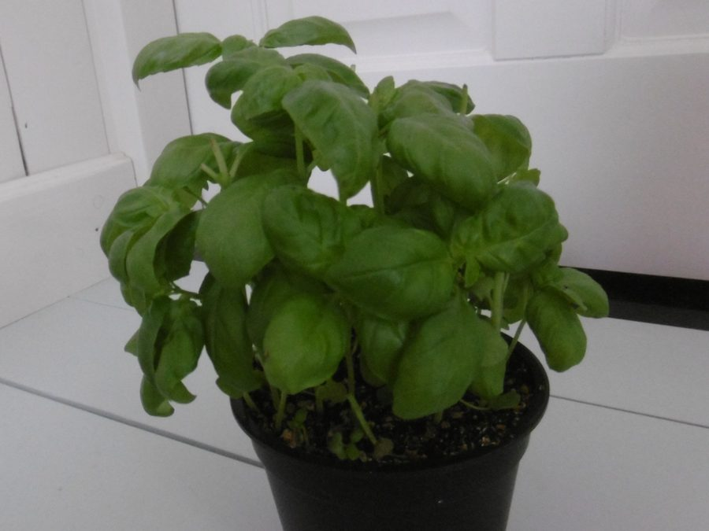
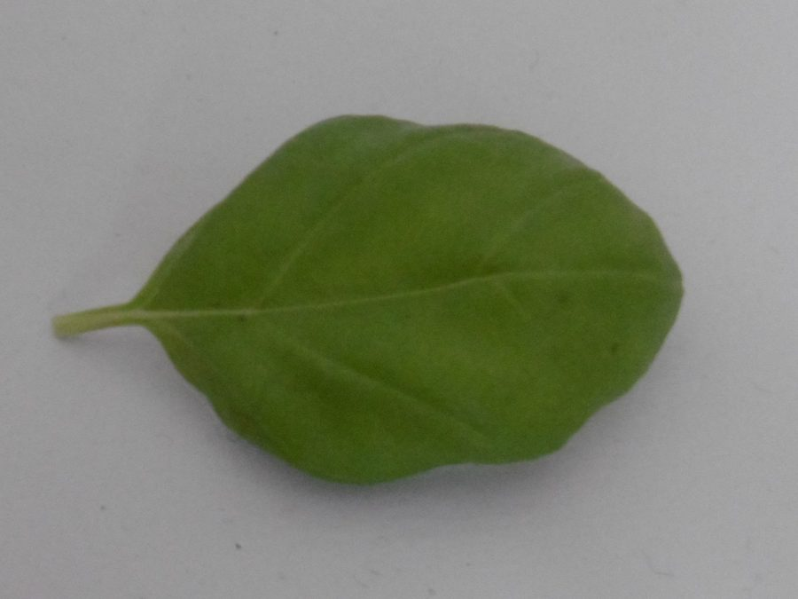
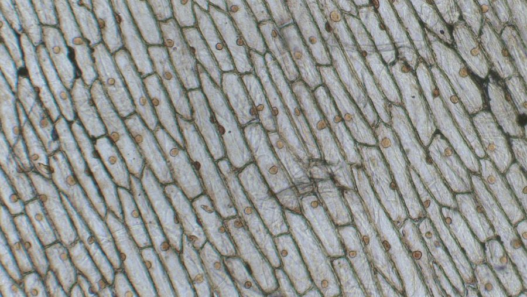
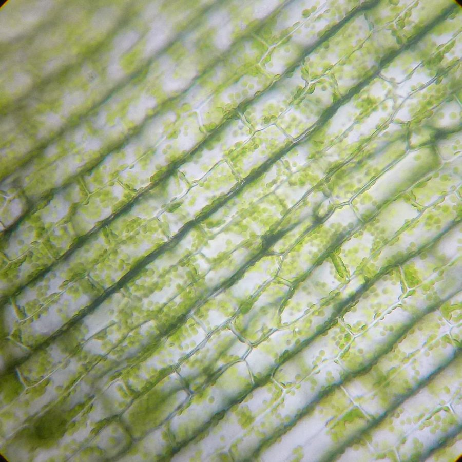

🔬 植物身體的組成
五年級自然｜第二單元 植物世界
這六樣都是植物身上的東西。
哪些是幫植物「活下去」的？哪些是幫植物「生下一代」的？
哪些是幫植物「活下去」的？哪些是幫植物「生下一代」的？
？？？
幫植物「活下去」的
？？？
幫植物「生下一代」的
給老師：先讓學生分完，不要急著按揭曉。先問「你為什麼把它放這邊？」
—— 低能力學生放對位置就算過，高能力學生負責說出理由。討論完再按揭曉。
植物的身體，一直放大下去會看到什麼？
個體
一整棵植物 ＝ 一個個體（肉眼看得到）

器官
摘下其中一片葉子（肉眼還是看得到）

↑ 把紅框那樣的一小塊葉子，放到顯微鏡下放大約 400 倍，看到的就像這樣 ↑
細胞
要用顯微鏡才看得到

洋蔥表皮細胞
一格一格的，像磚牆一樣

水蘊草葉細胞
裡面那些綠色小點，就是做養分的地方
⚠️ 細胞不是第四種器官。
它是把器官再放大之後看到的東西 —— 器官就是由許許多多細胞組成的。
它是把器官再放大之後看到的東西 —— 器官就是由許許多多細胞組成的。
細胞 → 器官 → 個體：細胞是植物體的基本單位
本段三個層次全部使用真實照片（來源：Wikimedia Commons）——
個體與器官：「Basil plant in pot 2」、「Single leaf of basil」by NeoMeesje，
CC BY-SA 4.0（已裁切）；
細胞：「Living cells of onion epidermis」by Berkshire Community College Bioscience Image Library，
CC0，
與「Cloroplasti Elodea」by Cimice50，
CC BY-SA 4.0（已裁切）。
給老師：指著水蘊草的綠點問「這些綠色小點在做什麼？」
—— 接回上一課〈水滴大冒險〉的光合作用，學生會自己想起來。
步驟 1
我們吃的這個部分，是植物的哪一個器官？
步驟 2
那它屬於哪一類器官？